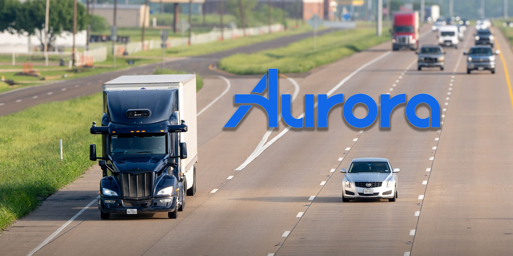
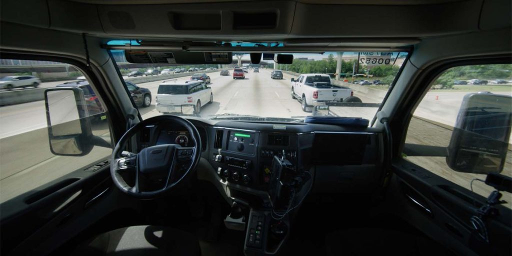
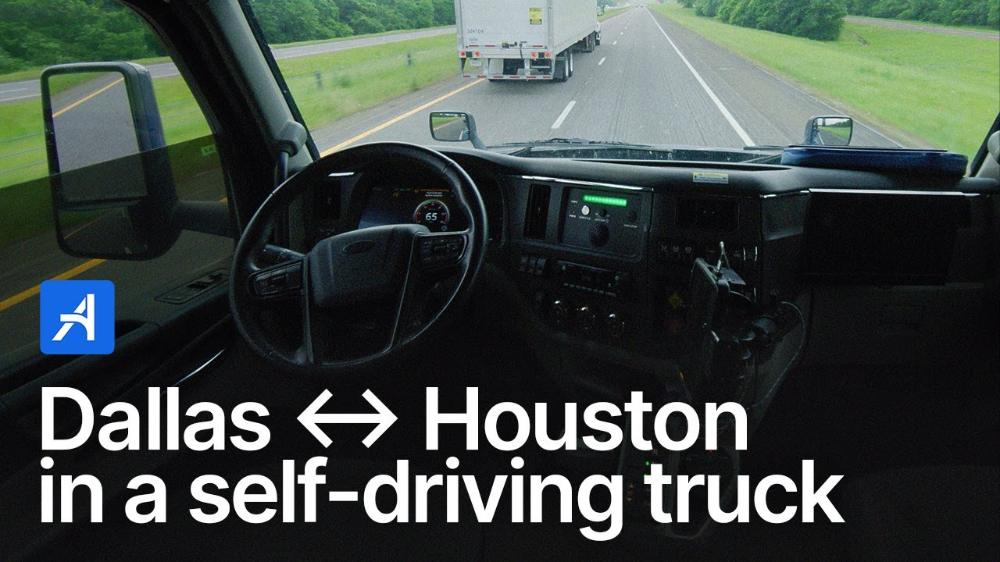

自律走行技術の開発企業であるAurora Innovation, Inc.が、米国で自動運転トラックを使ったフル規模の輸送サービスを正式に開始した。この商業輸送サービスの開始により、Auroraは米国の公道上でドライバーなしのサービスを運営する初の企業となった。以下の動画では、Auroraの自動運転トラックが高速道路を走行する様子を見ることができる。

Auroraは自律走行車技術企業であり、本格的な自動運転トラックサービスプロバイダーへと進化していく過程を、過去数年にわたって折に触れてレポートしてきた。2019年には同社がLiDAR企業のBlackmoreを買収し、自動運転トラックを高速で安全に運行させるためのセンシング・スイートの開発が可能になった。
2020年以降、AuroraはAurora Driverテクノロジーを統合したクラス8トラックを展開してきた。Aurora Driverには同社独自のLiDARが搭載されている。これまでにAurora Driverはドライバーなしで1,200マイル以上を走破している。同社が2024年に「Aurora Horizon」と呼ばれるサービスとして自動運転トラックを商業展開しようとしていた際、商業運行への道のりを支える追加資金として8億2,000万ドルを調達したと報じた。
そして今回、Auroraは米国南部で自動運転トラックサービスが正式に開始されたことを発表した。これは同分野において初の商業展開となる歴史的なマイルストーンだ。

同社の発表によれば、クラス8商業トラックのサービスはテキサス州で開始されており、ダラス〜ヒューストン間の定期輸送を車内にドライバーを乗せることなく行っている。この路線は上述のSAE レベル4自動運転システムであるAurora Driverによって支えられており、現在は米国における3兆ドル規模の長距離輸送産業向けに活用されている。
Auroraは、トラック業界が抱えるいくつかの課題——高齢化するトラック運転手の労働力、高い離職率、増大する運営コスト——を、自律走行技術を展開する理由として挙げている。Auroraは、自社のDriverシステムが雇用に影響を与えることなく、安全で信頼性の高い輸送ソリューションを提供できると考えている。共同創業者でCEOのChris Urmsonは、今回のマイルストーンについて次のように述べた。
「私たちはAuroraを設立し、自動運転技術の恩恵を安全に、迅速に、そして広く届けることを目指してきました。そして今、私たちは公道上で商業的なドライバーレス輸送サービスを安全に運営した最初の企業となりました。記念すべき初乗りの後部座席に乗ることは生涯の名誉であり、Aurora Driverは完璧に機能し、決して忘れられない瞬間となりました。変革的な技術を構築し、信頼を積み重ね、強固な顧客・パートナーエコシステムを構築してきた私たちのコミットメントが、この重要なマイルストーンを可能にしました。」
実際のドライバーレス走行に先立ち、Aurora Driverは300万マイルの自律走行マイルにわたって10,000件以上の顧客配送を完了していた。公道上での技術の安全性と有用性を示す安全ケースを確立した後、テキサス州での自動運転トラック運行を開始し、近い将来の拡大を計画している。
2025年末までに、Auroraはサービスをテキサス州エルパソおよびアリゾナ州フェニックスへと拡大する意向だ。クラス8自動運転トラックでAurora Driverが配送を行う様子は、以下の動画で確認できる。
